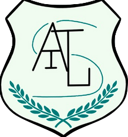

La compétence intitulée "Conduire" est centrée sur la capacité à gérer de manière efficace les projets informatiques en répondant aux exigences des clients et des utilisateurs finaux. Son objectif est de satisfaire les besoins métiers en alignant les projets avec la chaîne de valeur du client et en organisant le pilotage de ces projets en employant des méthodes de gestion adaptées, qu'elles soient classiques ou agiles.
Le but de cette compétence est d'assurer que les projets informatiques soient menés avec une démarche proactive, créative et critique, tout en respectant les réglementations juridiques et les normes établies. De plus, elle vise à promouvoir une communication efficace entre tous les acteurs d'un projet, ainsi qu'une sensibilité à une gestion éthique, responsable et interculturelle.
À travers diverses situations professionnelles, comme le lancement de nouveaux projets, le maintien opérationnel de projets existants ou l'évolution des systèmes d'information, cette compétence se développe sur deux niveaux. Le premier niveau porte sur l'identification des besoins métiers des clients et des utilisateurs, tandis que le second niveau s'attache à appliquer des démarches de suivi de projet adaptées à ces besoins. La maîtrise de cette compétence est donc essentielle pour diriger avec succès des initiatives informatiques dans un paysage technologique complexe et en évolution constante.

Trace n°1 : Logo de l'application web Altius
Le développement d'Altius s'est concentré sur la création d'une plateforme inclusive pour les personnes à mobilité réduite, démontrant ainsi un engagement profond envers des pratiques de développement éthiques et responsables. J'ai veillé à ce que toutes les fonctionnalités respectent non seulement les normes d'accessibilité mais aussi les diversités culturelles des utilisateurs, en intégrant plusieurs langues et en adaptant les interfaces pour refléter différentes normes culturelles, assurant ainsi une expérience utilisateur interculturelle et inclusive.
Sur le plan environnemental, la sélection des fournisseurs de services cloud s'est faite en fonction de leur engagement à utiliser des énergies renouvelables et à optimiser l'efficacité énergétique de leurs centres de données. Cette décision a renforcé notre engagement envers une gestion durable des ressources informatiques et a minimisé l'empreinte écologique de notre infrastructure technologique.
La phase de conception d'Altius a nécessité une démarche proactive et innovante pour répondre aux besoins spécifiques des utilisateurs à mobilité réduite. Cette approche a impliqué des études de marché approfondies pour identifier les lacunes dans les solutions existantes et développer des fonctionnalités qui répondent de manière plus efficace et intuitive à ces besoins. Par exemple, la mise en œuvre d'options de covoiturage pour les événements a été une solution créative pour faciliter l'accès tout en encourageant une mobilité plus durable.
De plus, l'approche critique a été une composante constante tout au long du développement du projet. J'ai régulièrement sollicité des retours d'utilisateurs et effectué des tests d'usabilité pour évaluer et améliorer continuellement l'application. Cette démarche a permis d'identifier rapidement les problèmes potentiels et de les corriger de manière proactive, assurant ainsi que la plateforme reste fonctionnelle, sécurisée, et répond bien aux attentes des utilisateurs.
En conclusion, à travers Altius, j'ai non seulement mis en œuvre des pratiques technologiques avancées mais j'ai également adopté une philosophie de développement qui privilégie l'éthique, la responsabilité, la durabilité et l'interculturalité, tout en restant engagé dans une démarche proactive, créative et critique. Ces efforts conjoints démontrent clairement l'acquisition et l'application des compétences encapsulées dans les CE5.03 et CE5.04, et soulignent mon engagement à mener des projets informatiques qui sont non seulement innovants mais aussi profondément ancrés dans des valeurs sociales et éthiques fortes.

L'acquisition des composantes essentielles CE5.03 et CE5.04 dans le cadre du projet Altius démontre des avancées significatives dans la compétence "Conduire", qui est centrée sur la gestion efficace des projets informatiques pour répondre aux besoins des clients et des utilisateurs finaux. En intégrant des pratiques de gestion éthique et responsable et en adoptant une approche proactive et créative, j'ai pu adresser efficacement les considérations éthiques, responsables, interculturelles et innovantes dans la gestion du projet. Cela a inclus l'assurance de l'accessibilité et de l'inclusivité du projet Altius, en prenant en compte les divers besoins des utilisateurs issus de différents milieux culturels.
En développant des solutions innovantes telles que les options de covoiturage pour les événements, j'ai fait preuve de créativité pour résoudre des problèmes complexes, une compétence clé pour la conduite de projets informatiques qui cherchent à introduire des améliorations significatives dans la manière dont les utilisateurs interagissent avec la technologie. Toutefois, pour atteindre une maîtrise complète de la compétence "Conduire", il est nécessaire de renforcer certaines compétences en matière d'optimisation des performances des bases de données. Cela implique l'amélioration de la rapidité et la réduction des charges sur les serveurs pour les projets à grande échelle, ce qui requiert une expertise approfondie dans la gestion des bases de données et des requêtes.
De plus, une démarche plus systématique et proactive dans la gestion des risques est essentielle pour assurer la réussite à long terme des projets. Cela comprend l'identification, l'évaluation et la mitigation proactive des risques, ce qui nécessite une compréhension approfondie des potentiels défis et obstacles qui pourraient survenir durant la vie du projet. Enfin, améliorer l'application des méthodologies de gestion de projet, adaptant les approches agiles ou classiques aux besoins spécifiques du projet et de l'équipe, est crucial pour une gestion rigoureuse des timelines, des budgets, et des ressources.
Ces éléments combinés démontrent que bien que des progrès significatifs aient été faits, une attention continue et un développement des compétences spécifiques restent nécessaires pour parvenir à une maîtrise complète de la compétence "Conduire". Cela garantira non seulement la réussite des projets futurs mais aussi leur alignement avec les exigences élevées d'un environnement professionnel complexe et en constante évolution.